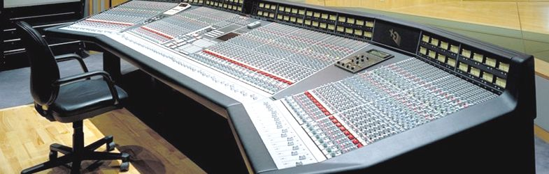

SSL SL 4000 E — Total Recall
The first digitally-automated mixing console to 'remember' every knob — but on recall the machine doesn't move the controls; a color-coded display guides a human operator's hands to re-turn each pot, making the engineer the servo in the loop

Overview
The SSL SL 4000 E (1979) was the console that automated the recording-studio mix. Solid State Logic's earlier B Series had already motorized the master faders under computer control, but a large-format console has hundreds of rotary pots — every channel's gain, EQ, and send — far too costly to motorize. So SSL's Total Recall solved machine memory with the operator's own hands: the console's computer saved the position of every control to a 5¼-inch floppy disk and, on recall, lit a color-coded display beside each pot that was "out of position," telling the engineer which direction to turn it. The engineer physically re-turned every control until the display stopped nagging, and the mix was "recalled." The machine held the state; the human was the actuator.
Deep dive
SSL founder Colin Sanders built electronic control systems for pipe organs; the company's name described the transistor/FET switching he sold to organ builders. When he wanted a console with settings recall that didn't exist, he built two computer-controlled SL 4000 A prototypes himself for his own Acorn Studios. Automation was in SSL's founding logic, not a later retrofit.
The 1976 B Series married the SL 4000 in-line console design to a computer providing fader automation and programmable tape-transport auto-location. Only six were built (Abbey Road, Le Studio, Virgin's Townhouse, Tocano). These treated the mix as data, but only the faders moved under machine control.
The E Series added Total Recall. Because hundreds of rotary pots couldn't be motorized, the computer saved every control position to floppy and, on recall, lit a color-coded display telling the engineer which pots were wrong and which way to turn them. Sound on Sound described it as a lot of manual control alignment — accurate and impressive, but certainly not instant or automatic.
The 1987 G Series brought the motorized moving faders that automated the mix itself, while Total Recall for the rotary pots remained. The E/G family, with a compressor/gate on every channel and a master bus compressor, became the canonical pop, rock, and R&B studio sound of the 1980s and '90s; SSL's 1996 Billboard data put 83% of that year's number-one singles on SSL consoles. The SL 4000 entered the TECnology Hall of Fame in 2004.
Team & pioneers
- Colin Sanders. Founder of SSL (1969); designed the SL 4000 A prototypes himself for his own Acorn Studios.
- Solid State Logic Ltd. Manufacturer, Begbroke, Oxfordshire, England; founded 1969 as a pipe-organ control systems maker. Now part of the Audiotonix Group.
- George Martin. Collaborated on the E Series' new four-band EQ section (1979).
Media
Sources
- Solid State Logic — Wikipedia (founded 1969 by Colin Sanders; 1976 B series computer fader automation; 1979 E series save/recall; 1987 G series)
- Solid State Logic SL 4000 — Wikipedia (Total Recall saves all rotary controls to a 5¼-inch floppy and recalls via a color-coded display guiding the operator to manually realign each control)
- File:SSL SL4000G+.jpg — Wikimedia Commons